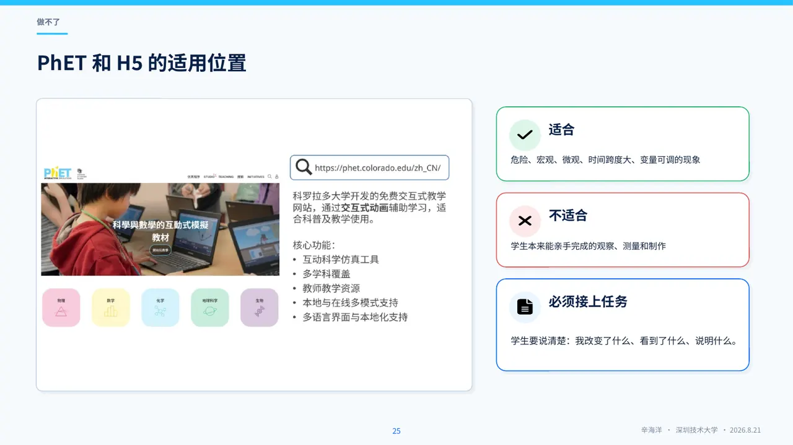
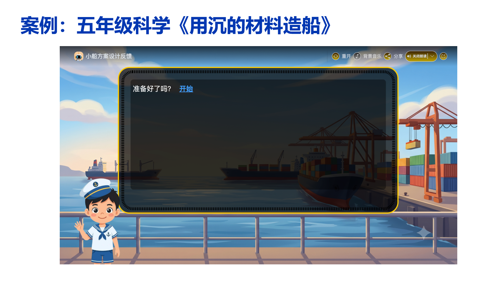
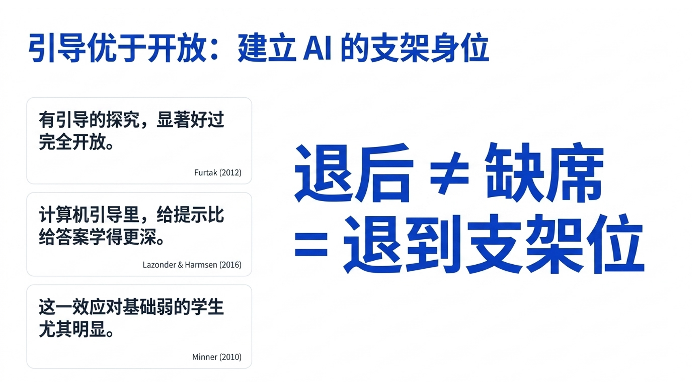
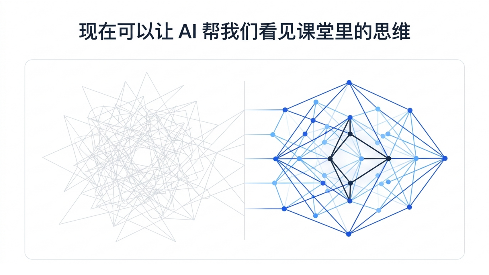

看不见
过程太快、太慢、太小、太远，或者学生的想法没有说出来。
小学科学教师培训 · 2026
先把科学课上好，再决定AI放在哪一步
辛海洋 · 2026年8月21日 · 深圳技术大学
开场判断
教师要做三次判断：这一步需不需要AI、用到什么程度、什么时候关掉。

三个课堂卡点
过程太快、太慢、太小、太远，或者学生的想法没有说出来。
时间、器材、安全和班额，让探究容易退化成照步骤完成。
热闹看得见，学生依据什么改变想法却看不见。
先定课堂顺序
真实材料能做就先做；证据还不够就先不下结论；安全和教学判断由教师负责。
把AI放在某一个步骤里用，不要把整节课交给它。
贯穿全场的案例
这节课只在三个地方用AI，其余时间留给学生。
看见
屏幕能放慢、放大、拉近；学生有没有理解，还得听他怎么解释。
典型前概念
“看不见了，是不是就没有了？”
糖或食盐溶入水中后，观察不到颗粒，不代表物质消失。
先问一句：你为什么这样判断？再决定要不要看微观模型。
日食 · 第一步
先让学生拿着手电筒和大小球，自己找到‘挡住了’的位置。

日食 · 第二步
模拟的用处，是把同一个变量反复调给学生看。
日食 · 第三步
月球挡住了太阳，所以发生日食。
你的模型中，观察者必须站在哪里？哪一次摆放没有出现日食？
请用模型重新摆一次，并指出你的证据。
植物生长
每天量高度、数叶片、记光照，这些不能用生成视频代替。AI可以对齐照片、提醒缺测，再提出比较问题。

关掉屏幕再检查
请学生关掉动画，拿着自己的记录解释一次；再换一个情境，看他还能不能说明白。
会指出现象是一层，会拿证据解释是另一层。
探究
如果方案、步骤、结论都由AI给出，实验做得再完整，也很难看见学生自己的探究。
真探究 / 假探究
别只看课堂热不热闹，要看学生有没有比较证据、改过想法。
现实约束
现象太慢，反复试验挤占课时。
数量不足，部分变量无法在校内操作。
40多人同时记录、讨论和反馈，教师难以看见全过程。
什么时候值得用
让学生多试一次，多比一组证据
如果只是更快得到标准答案，这一步可以省掉。
工具选择
能观察、能动手，就先不换成屏幕。
照片、慢镜头、公开数据已经够用时，不重复生成。
需要反复改变变量时，再使用PhET或H5。
现有资源确实缺口明显，才生成新的认知工具。
现成模拟
打开前先给问题和记录表；操作结束后，还要回到真实现象或模型中解释。

盐溶解 · 公平比较
等学生写完第一版方案，再让AI找遗漏的控制条件；哪组数据可信，仍要回到实验记录。
迁移挑战
让学生自己定控制条件、判定标准和记录方法，看看上一轮的办法能不能迁移过来。
工程实践
每次改动都写清楚：为什么改、测试看到了什么、下一版准备改哪里。

什么时候关AI
关掉AI后，学生还能提出问题、比较证据、修改解释吗？

评价
AI可以整理课堂片段和学生记录；学生为什么改了想法，仍要由教师判断。
比得分更有用的问题
留下这些材料
实验前怎么想
观察到什么
怎样回应同伴
解释改了哪里
AI负责整理和提醒缺项，教师负责判断这些材料够不够。
活动 ≠ 素养
同一个任务
“温度高，溶得快。”
“两组盐量相同，热水组先达到看不见颗粒的标准。”
“我们搅拌速度不同，所以还不能只归因于温度。”
记录学生说了什么，比给他贴一个类型标签更有用。
解释 / 论证
说明现象为什么发生：结果、机制与条件是否连起来。
面对不同观点，用证据支持主张、限定范围并回应反例。
二者都需要证据，但课堂任务不同。
CER不是填空格式
提高水温会缩短食盐达到同一溶解标准的时间。
相同盐量和水量下，热水组三次用时均短于常温组。
在本次控制条件下，温度变化与溶解用时的差异一致；但仍需说明搅拌和判定标准。
AI评课
它能按时间整理活动、提问和学生回应；一段发言不能直接变成对学生能力的定性。

教师做最后判断
AI可以给线索，决定之前必须由教师复核。
怎么组织课堂
谁先说、谁后说；什么时候追问；什么时候把屏幕关掉。
同一工具，不同用法
教师选择，学生观察
卡住时追问证据
操作变量、整理记录
开始替学生决定与解释
学生使用AI的时机
AI在学生形成结论前，不直接给完整答案。
课堂里先用这一条
你是小学科学探究助手
阅读学生的实验方案并提出问题
先别给结论；一次只问一个问题
优先追问变量、证据和反例
学生方案：比较热水和冷水中盐的溶解。请先问我一个可能影响公平比较的问题。
学生直接问答案
01先告诉我：你已经观察到了什么？
02AI这句话里，哪一部分有证据，哪一部分只是推测？
03请关掉AI，用你的实验记录重新说一次。
40多人班级

AI出错了
AI说：盐在热水里会溶解得更多，所以一定也溶解得更快。
数据与隐私
课前30秒检查
答不清，就先不上。
现场练习
一张图、一段视频或一组可比较材料
一个可操作变量的模拟或H5原型
只追问证据、不直接给答案的智能体
回到自己的课堂
下周先选一节课、一个卡点，只试一次。
关掉以后，孩子还能观察、比较证据、讲清自己的判断吗？
附录 A1
它不是给学生贴固定等级。
附录 A2
不是官方的十二步教学法，也不是每节课都要覆盖。
附录 A3
不根据一次表现推断稳定特质。
附录 A4
工具会变，教学功能相对稳定。
附录 A5
把示例、试点和正式研究分开。
附录 A6
一页纸说清楚，才适合下周试用。